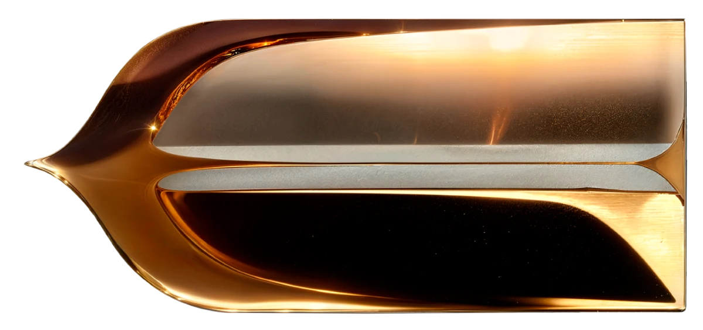
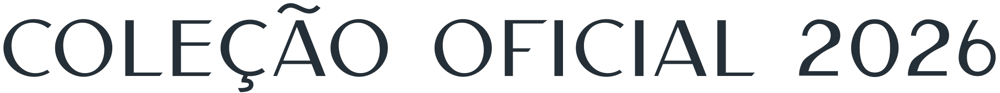
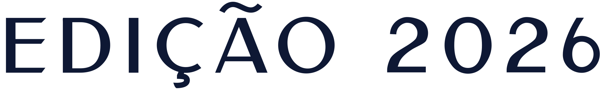
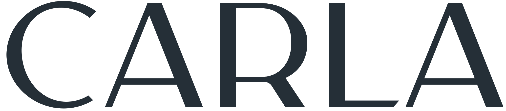
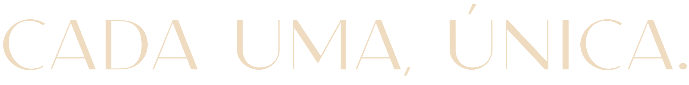

Livro da marca
Eliria liga ocasiões e joias exclusivas. Este livro diz como a marca é usada, para que qualquer pessoa que faça algo em seu nome acerte da primeira vez.
- Edição
- 0.2
- Data
- 20 de novembro de 2026
- Marca
- Eliria
- Feito por
- Arvorealta
- Cobre
- Peças, papelaria, redes
A marca em uma página
Se você ler só uma parte, leia esta.
Diferenciamos ocasiões com alta classe.
Ligando gestos de reconhecimento no tempo.
Vincular ocasiões e joias exclusivas.
Usadas a 70, 20 e 10 por cento.
Carla Sans e Open Sans.
Vestuário, música e arte: a definir com a Eliria.
- Nunca altere a marca. Sem cor nova, sem efeito, sem esticar.
- Só os arquivos novos. Nada da pasta 99 Archive vale como marca, cor ou tipografia.
- Nunca gere uma imagem da peça. Uma joia mostrada é uma joia fotografada.
A mensagem
Uma linha que a marca existe para tornar verdade. Ela é dita, nunca explicada.
Vincular ocasiões
e joias exclusivas.
De Eli, raiz hebraica para «ascendido» ou «meu Deus», e de lyrikos, a poesia feita para ser cantada com a lira.
- Use a linha como está escrita. Sem adjetivo a mais, sem palavra trocada.
- Uma linha por superfície. Uma página, um convite ou um estojo carrega uma mensagem, nunca as duas.
- Diga, depois mostre. A peça embaixo é a explicação.
A marca
O símbolo em ouro é a assinatura. Aparece uma vez por superfície, em bom tamanho, e nunca é redesenhado.
- A ponta. Tudo parte de um ponto à esquerda e se abre para a direita. É o que faz a peça ler como um objeto em movimento.
- A lâmina clara. Metal fosco que recebe a luz. É a maior superfície do símbolo.
- O fio. Uma faixa fina de prata entre as duas lâminas. É o detalhe mais fino, e o primeiro a sumir quando a marca diminui.
- A lâmina escura. Metal polido que espelha a sombra. O contraste entre as duas lâminas é o que dá volume.
- A proporção. 2,1 vezes mais larga que alta, com o lado direito cortado reto. Assenta sobre uma linha, por isso se alinha com o texto.
Principal
O símbolo em ouro, como foi renderizado. A assinatura: capas, estojos, o fecho de uma página.
- Arquivos
- PNG, transparente
Nome
O nome Eliria, desenhado em contornos. Onde o nome precisa ser lido sozinho.
- Arquivos
- SVG
Símbolo em uma cor
O símbolo desenhado em vetor, em uma só cor. Tudo o que o ouro renderizado não pode fazer: gravar, estampar, bordar, relevo seco.
- Para
- Abaixo de 120 px, gravação, carimbo, relevo seco, favicon
- Arquivos
- SVG
Assinatura
O símbolo junto ao nome, como um desenho só. Para os lugares onde a marca e o nome viajam juntos.
- Para
- Convite, certificado, cartão
- Arquivos
- SVG
Ícone
O símbolo em uma cor, num quadrado, para a foto de perfil e a aba do navegador.
- Para
- Foto de perfil, favicon
- Arquivos
- PNG, quadrado
Abaixo de 120 px na tela, ou 25 mm no papel, o fio de prata some e o brilho vira mancha. Nesses tamanhos vai o símbolo em uma cor, que ainda não existe.
Cor
Três cores numa proporção fixa, escolhidas entre as seis da paleta da Eliria. O verde sacramento sai porque, ao lado do indigo, mede 1,04:1: dois escuros fazendo o mesmo trabalho. O teal e o rosé saem porque são tons médios que não carregam texto.
Indigo
O fundo, e o texto sobre creme ou branco. Azul é o complemento do ouro: o símbolo acende sobre ele. RGB 14 24 52 · CMYK 95 86 48 61.
Creme
O segundo fundo, e o texto sobre indigo, a 13:1. Valor lido da paleta; o CMYK está a definir.
Camel
A cor chapada do ouro: filetes, detalhes, o símbolo em uma cor. RGB 142 118 87 · CMYK 41 47 59 15.
- Mantenha a proporção. Se o camel começa a parecer tema, há camel demais.
- Camel nunca é texto pequeno. Mede 3,2:1 sobre creme e 4,3:1 sobre branco; sobre indigo mede 4,1:1, o bastante só para títulos grandes.
- O metal é o símbolo. O ouro renderizado não vira cor de fundo, de faixa ou de texto; quando a peça pede uma cor chapada, é o camel.
- Impresso, sobre branco ou creme. Indigo sobre branco mede 17,5:1, sobre creme 13,0:1.
Tipografia
Duas famílias, uma função cada, as duas da pasta 03 Type. Carla Sans dá o nome e os títulos; Open Sans faz todo o resto. A Playfair Display sai: era uma segunda voz de título, e é fraca em tamanhos pequenos, em certificados e na gravação.

Cada peça é gravada com o ano e as iniciais de quem a recebe.
Nº 007 / 120 • Coleção 2026


- Carla Sans sempre em caixa alta. As minúsculas dela são as próprias maiúsculas, sem os acentos: «Coleção» digitado assim sai COLECAO.
- Ligaduras desligadas por padrão. Com elas ligadas, CA, LA, RA, GA e outros pares viram um desenho só. Use de propósito, num título, nunca por acaso.
- Carla Sans não tem «·», «–» nem «º». O separador é «•»; o resto vai em Open Sans.
- Cada quebra de linha num título é escolhida. Não deixe um título quebrar sozinho.
- O nome Eliria é desenhado, nunca digitado. Até o desenho chegar, use o símbolo sozinho.
Espaço e forma
O espaço é o que torna uma página agradável de ler. Uma unidade, uma largura de linha que o olho acompanha, dois pesos de filete e quatro formas, cada uma com uma função. Sugestão do estúdio.
Pixels de tela. Acima de 24, cada passo é cerca de 1,6 vez o anterior, então um espaço maior sempre separa algo maior. Num documento a unidade é a linha de base, 15 pt, e o espaço se conta em linhas.
Uma peça Eliria é entregue numa ocasião, com o ano e as iniciais de quem a recebe. O convite, o certificado e o estojo chegam antes dela e falam por ela. Uma página na largura certa é lida até o fim, porque o olho encontra o começo da linha seguinte sem procurar.
Fecha. 0,75 pt em tinta no impresso, 1 a 2 px na tela. Acima do bloco de título e abaixo do último.
Divide. 0,25 pt a 20 por cento no impresso, 1 px a 14 por cento na tela. Entre linhas de uma tabela.
- Todo espaço está na escala. Se um espaço não é um dos passos, está errado.
- O espaço diz o que anda junto. O espaço dentro de um grupo é sempre menor que o espaço em volta.
- De 45 a 75 caracteres por linha, 62 como alvo. Texto corrido com entrelinha de 1,5, títulos de 1,0 a 1,05.
- Dois filetes, nunca um terceiro. Um terceiro peso é enfeite.
- A forma diz o que faz. Uma pílula se aperta; um retângulo se lê.
Documentos
Um sistema para tudo o que a Eliria entrega em papel: carta, convite, certificado e cartão, nas duas famílias. Toda página é feita sobre a mesma grade, para que o leitor a aprenda uma vez. Sugestão do estúdio; os textos dos desenhos são exemplos.
Desenhado em escala: dentro da página uma unidade é um milímetro; o cartão aparece no corte, então cada medida abaixo é a medida do desenho. Ligue a grade e a linha de base para ver o que segura a página.
| Página | Margens | Grade | Linha de base | Coluna de leitura | |
|---|---|---|---|---|---|
| Carta, convite, certificado | A4 · 210 × 297 mm | 20 mm em cima e dos lados, 23 mm embaixo | 12 colunas de 10,5 mm, entrelinhas de 4 mm | 15 pt · 48 linhas | Colunas 5 a 12: 112 mm, cerca de 62 caracteres |
| Cartão | 85 × 45 mm + 3 mm de sangria | 6 mm dentro do corte | Nenhuma: três blocos | 10 pt | Frente: o símbolo em relevo seco, 40 mm de largura. Verso: nome, função e contato |
| Função | Família | A4 | Uso |
|---|---|---|---|
| Título | Carla Sans, caixa alta | 40 / 45 pt | Uma vez, no convite ou na capa |
| Cabeçalho | Carla Sans, caixa alta | 22 / 30 pt | Abre uma seção |
| Abertura | Open Sans Light | 15 / 20 pt | A frase sob um título |
| Texto | Open Sans | 10 / 15 pt | Tudo o que é lido |
| Nota | Open Sans | 8 / 12 pt | Legendas, notas, fontes |
| Rótulo | Open Sans SemiBold, caixa alta | 8 / 15 pt | Achado, não lido: nomes de campos, rodapé |
| Número | Open Sans Condensed | 22 / 30 pt | O número da peça e o ano, nos campos |
- Rótulos à esquerda, texto à direita. O olho procura descendo pela esquerda e lê à direita.
- Fatos são campos, não frases. Um rótulo com o valor embaixo, para que um ano ou um número se encontre sem ler.
- O espaço se conta em linhas. Nada entre um rótulo e o seu valor, uma linha entre blocos, duas antes de um cabeçalho.
- Toda página diz o que é no rodapé. Documento, referência, número da página.
- A marca uma vez. No alto da carta ou no centro do convite.
- O cartão é o próprio papel. Nada impresso na frente: o símbolo sobe do papel em relevo seco. O verso leva o nome e o contato.
Voz
A marca fala pouco e com exatidão. Não explica o luxo, mostra. Sugestão do estúdio.
Mostre, não elogie
EscrevaGravada com o ano e as iniciais de quem a recebe.
NãoA joia mais exclusiva do mercado.
Tempo, não moda
EscrevaColeção oficial 2026.
NãoA tendência da estação.
Quem recebe é convidado de honra
EscrevaUma peça para quem foi reconhecido.
NãoAproveite, últimas unidades!
Escreva o que continua verdade
EscrevaCada uma, única.
NãoCento e vinte peças.
coleção oficial · legado · reconhecimento · ocasião · gravado · numerado
promoção · desconto · barato · tendência · imperdível · luxo acessível
Imagem e movimento
A peça fotografada, mostrada grande. Luz baixa e quente, fundo escuro, a joia em primeiro plano: o ouro precisa de sombra para brilhar. Sugestão do estúdio; as fotografias ainda não existem.
- A joia real, fotografada. Nunca uma peça gerada ou montada.
- Mostre a peça grande. Meça como parte do quadro, não como miniatura ao lado do texto.
- Sombra antes de luz. Um fundo claro achata o metal.
- Teste o texto sobre a própria foto. Contra a parte mais clara que fica atrás dele.
- Um movimento lento por tela. Nada se mexe para quem pediu menos movimento.
Componentes
As peças de uma página da Eliria na tela, vivas. Passe o mouse, toque e use. Sugestão do estúdio, nas três cores.
Um texto para uma intenção: as mesmas palavras em todo botão que faz a mesma coisa. A pílula com contorno é a ação; a pílula discreta fica dentro de uma seção calma.

Gravada com o ano e as iniciais de quem a recebe.Aplicações
Onde a marca aparece, e as duas ou três regras que cada superfície acrescenta. Sugestão do estúdio.
A peça
- O símbolo em uma cor, gravado no metal.
- O ano e as iniciais de quem recebe, ao lado.
Estojo
- Indigo por fora, o símbolo em relevo seco na tampa.
- Nada impresso além disso.
Certificado
- A4 na grade dos documentos.
- O número da peça e o ano como campos, nunca numa frase.
Convite
- A marca no alto, o nome da ocasião em Carla Sans, caixa alta.
- Impresso sobre branco ou sobre creme.
Redes sociais
- Foto de perfil: o símbolo sobre indigo, centrado no círculo.
- Cinco formatos, na tabela abaixo.
Assinatura de e-mail
- Só texto: imagens na assinatura são bloqueadas pela maioria dos programas de e-mail.
- Nome, marca, uma linha de contato.
| Arquivo | Tamanho | Para |
|---|---|---|
| eliria_social_link_1200x630.png | 1200 × 630 | Prévia de link: WhatsApp, LinkedIn, Facebook |
| eliria_social_linkedin-banner_1128x191.png | 1128 × 191 | Capa da página da empresa no LinkedIn |
| eliria_social_square_1080x1080.png | 1080 × 1080 | Post quadrado |
| eliria_social_portrait_1080x1350.png | 1080 × 1350 | Post vertical no feed |
| eliria_social_story_1080x1920.png | 1080 × 1920 | Stories e Reels |
Arquivos, Drive e contato
Onde cada arquivo fica, como se chama e qual o tamanho, para que qualquer pessoa encontre o certo sem perguntar.
| Família | Uso | Licença | Onde |
|---|---|---|---|
| Carla Sans | Nome, títulos | A confirmar: os arquivos não trazem licença | Drive, 03 Type |
| Open Sans | Texto, rótulos, números | Open Font Licence | Google Fonts |
As pastas seguem a ordem deste livro. Hoje só existem os arquivos do símbolo em ouro, em 01 Mark; o resto é o que cada pasta vai receber. O que está em 99 Archive não vale como marca. Uma chave é abreviação de um arquivo por palavra: _{indigo,creme}.svg são dois arquivos.
cliente_peca_versao_cor_tamanho.ext
| Campo | Diz | Exemplos |
|---|---|---|
| cliente | De quem é a marca | eliria |
| peça | O que é | mark · colour · type · photo · template · social · card |
| versão | Qual delas | primary · symbol · lockup · wordmark · certificate |
| cor | Qual cor, nas marcas. gold é só o metal renderizado; um desenho chapado leva uma cor da paleta. cmyk depois dela, para impressão | gold · indigo · creme · camel |
| tamanho | Na tela: a largura da imagem, ou os dois lados de um formato fixo. No impresso: o papel, ou milímetros com a unidade. Um vetor não leva | 1200w · 1080x1350 · a4 · 85x45mm |
| ext | O formato | svg · png · webp · jpg · pdf · mp4 · afdesign · dotx · docx |
- Minúsculas, sem espaços, sem acentos. Ç vira c, & vira and.
- Sublinhado entre campos, hífen dentro de um. linkedin-banner é um campo só.
- Deixe de fora o campo que não se aplica. Nunca escreva none nem final.
- Nada de versão ou data no nome. Uma versão nova sobe por cima da antiga, em Gerenciar versões, e todo link já enviado continua funcionando.
- Cada prancheta do Affinity tem o nome do arquivo que exporta. Assim ninguém digita um nome duas vezes.
| Peça | Mestre | Entregue como | Tamanhos | Cor e resolução |
|---|---|---|---|---|
| Marca, principal | O render, PNG de 4800 px | PNG, transparente | 600w · 1200w · 2400w | sRGB. Com 2400w imprime cerca de 200 mm a 300 ppi |
| Símbolo, nome e assinatura | .afdesign | SVG; PDF para impressão | qualquer | sRGB na tela, CMYK no PDF de impressão |
| Ícone | Do símbolo | PNG, quadrado | 32 · 180 · 512 | sRGB |
| Cor | Um arquivo de texto com os valores | .ase, que o Affinity e a Adobe importam | HEX e RGB | |
| Tipos | Os arquivos da marca, em 03 Type | Um zip por família | Open Sans: Open Font Licence. Carla Sans: licença a confirmar antes de enviar a terceiros | |
| Fotografia | RAW ou TIFF de 16 bits | JPG a qualidade 90; WebP para a web | 3840w; 720w · 1280w · 1920w | sRGB |
| Documentos | Modelo do Word, .dotx | DOCX para preencher; PDF a partir dele | a4 | As fontes instaladas ou embutidas no arquivo |
| Redes | .afdesign | PNG | 1200x630 · 1128x191 · 1080x1080 · 1080x1350 · 1080x1920 | sRGB |
| Cartão | Uma página HTML, impressa em PDF | Dois PDFs: o verso, e a faca do relevo da frente em 100% preto | 85x45mm + 3 mm de sangria | Fontes embutidas; a faca é vetor |
| 0.2 | 20 nov 2026 | Só Eliria. Indigo, creme e camel; Carla Sans e Open Sans. |
| 0.1 | 20 nov 2026 | Refeito no modelo do livro da Arvorealta, só com os arquivos novos da marca. |